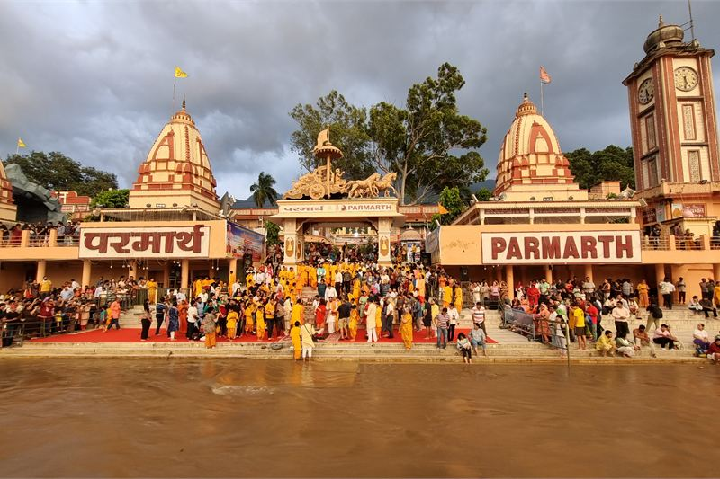
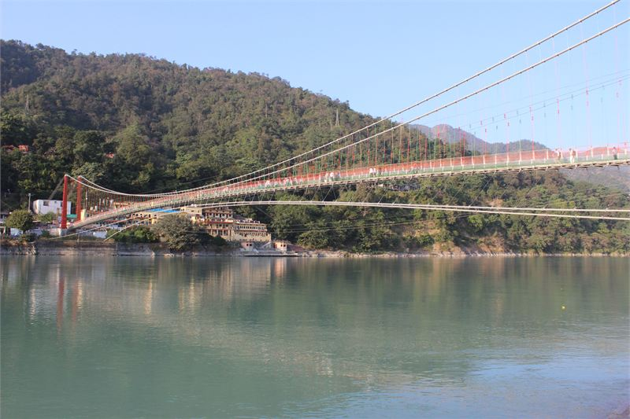

How these hotels were researched
▼- Rates: compared across more than one booking platform on the same day, quoted as a range with the month checked. Not a quote, and they move.
- Guest reviews in bulk: looking for complaints that repeat across many months, not single bad nights.
- Location: checked against a map, measured to the thing you actually came for.
- Real cost of entry: taxes, compulsory meal plans, transfers, and what is not included in the headline rate.
- What I could not confirm is said plainly in the text rather than filled in.
Rishikesh has transformed from a quiet pilgrimage town into two parallel travel destinations. One is the energetic backpacker hub around Tapovan and Lakshman Jhula with cafes, yoga shalas, and raft operators. The other is secluded luxury wellness resorts built along private bends of the Ganges 30 kilometres upriver.
Deciding where to stay depends on whether you want daily access to town life or silence inside a private forest valley. Transport between remote upriver resorts and central Rishikesh takes up to forty-five minutes along winding mountain roads.
Rates listed below were verified in July 2026 across booking platforms, covering low monsoon rates and peak winter figures.
Taj Rishikesh Resort and Spa

Set on a 12-acre terraced hillside in Singthali, Taj Rishikesh was designed using Garhwali slate stone architecture. The resort steps down to a private white sand beach along a quiet bend of the turquoise Ganges.
Rooms feature slate walls, local timber work, floor-to-ceiling glass windows, and private balconies overlooking the river valley. The Jiva Spa offers Ayurvedic therapies, daily morning yoga sessions on an open pavilion, and private evening Aarti rituals on the riverbank.
Indicative rates start at Rs 28,000 during off-peak summer months and exceed Rs 75,000 for luxury villas during peak autumn wellness season. The drawback is isolation. Reaching Lakshman Jhula or Triveni Ghat requires a 45-minute drive along the Badrinath highway.
I could not confirm whether Taj Rishikesh operates its morning Ganga Aarti private beach ceremony continuously during high monsoon water levels in August.
| Indicative rate | Rs 28,000 to Rs 75,000 per night |
|---|---|
| Rates checked | July 2026 |
| Location | Singthali, 30 km upriver from Rishikesh |
| Best for | Secluded luxury, quiet river beach access, and Ayurvedic wellness |
In its favour
- Private white sand river beach away from town crowds and raft noise
- Stunning Garhwali slate stone terrace architecture
Worth knowing first
- Isolated location makes visiting Rishikesh cafes or temples inconvenient
- Steep hillside paths require buggy transport between villas and main lodge
- Rishikesh is dry and vegetarian by law, so no alcohol or meat regardless of what you are paying
Tapovan and Lakshman Jhula Boutique Stays

Tapovan sits on the hillside above Lakshman Jhula bridge, acting as the epicenter for independent yoga schools, organic cafes, and raft booking offices. Staying here keeps you in the middle of town activity.
Boutique hotels and yoga retreat lodges offer air-conditioned rooms, rooftop studio spaces, and Ganges views starting from Rs 3,800 to Rs 12,000 per night. You can walk to popular health food spots like Beatles Cafe or Devraj Coffee Corner in minutes.
The main drawback is noise and narrow street congestion. Tapovan lanes are narrow, steep, and frequently jammed with scooters, auto-rickshaws, and cows. Quiet sleep requires asking for a rear room away from main road inclines.
| Indicative rate | Rs 3,800 to Rs 12,000 per night |
|---|---|
| Rates checked | July 2026 |
| Location | Tapovan hillside above Lakshman Jhula |
| Best for | Walking access to yoga studios, organic cafes, and rafting |
In its favour
- Immediate walking access to hundreds of yoga classes and cafes
- Affordable nightly rates compared to upriver luxury resorts
- Walking distance to the river ghats and the evening aarti, which the hillside resorts are not
Worth knowing first
- Congested lanes with scooter traffic and steep walking inclines
- Construction noise from ongoing guesthouse expansion in Tapovan
Isolated Upriver Luxury Wellness Resorts
This is the option to skip: Upriver luxury resorts if your focus is Rishikesh town life. Spending Rs 30,000+ per night for a wellness resort in Byasi or Singthali when you plan to spend every day sightseeing in central Rishikesh is an expensive mistake. You will spend two hours daily stuck in highway traffic near Shivpuri raft put-in points.
These secluded properties are designed for self-contained wellness stays where guests remain on-site for spa treatments, organic meals, and meditation. If your goal is daily town exploration, book a hotel in Tapovan or Ram Jhula instead.
| Indicative rate | Rs 25,000 to Rs 65,000 per night |
|---|---|
| Rates checked | July 2026 |
| Location | 25 km to 35 km upriver from Rishikesh town |
| Watch for | High taxi costs to visit town attractions |
What it costs to actually get there
Getting to Rishikesh involves multiple transit layers. Flights land at Jolly Grant Airport in Dehradun (DED), located 20 km from Tapovan. A prepaid airport taxi costs roughly Rs 1,200 to Tapovan, but upriver luxury resorts like Taj Rishikesh charge between Rs 3,500 and Rs 5,000 for a private airport transfer along the mountain highway.
If arriving by train from New Delhi, the Vande Bharat Express reaches Haridwar or Yog Nagari Rishikesh stations efficiently. However, reaching isolated upriver properties from the railway station requires hiring a private cab, as public bus transport on the Badrinath route does not stop conveniently at resort gates.
When to go, and what changes
Seasonality radically changes the Rishikesh experience. From late June to mid-September, the Ganges swells with monsoon rains. River rafting operations shut down entirely by government order, and outdoor yoga pavilions at many resorts become unusable due to heavy squalls and humidity.
October through March provides clear skies and crisp mountain air, making it the peak season for wellness retreats and adventure sports. However, December and January nights drop near freezing, and unheated budget rooms in Tapovan become bitterly cold. High-end resorts offer climate-controlled rooms, but budget travelers should confirm the availability of thick blankets or space heaters before booking winter stays.
Choosing your Rishikesh location
If you want intensive yoga instruction, cafe hopping, and river rafting trips, pick a hotel in Tapovan or Swarg Ashram. If you are seeking quiet rest, Ayurvedic spa programs, and silent mornings along the Ganges, book an upriver resort in Singthali.
For additional Ganges riverfront insights, examine our Varanasi Ganges riverfront guide or discover sustainable stays in our Eco stays in India review.
Practical Rishikesh travel notes
- Rishikesh is a dry and vegetarian town by law. Alcohol and meat are strictly prohibited within municipal limits, including inside most hotel restaurants.
- Lakshman Jhula pedestrian suspension bridge has been closed to heavy traffic for structural repairs. Nearby Janki Setu bridge handles pedestrian crossing.
- River rafting on the Ganges is suspended during monsoon season from late June to mid-September due to dangerous water velocity.
- The nearest airport is Jolly Grant in Dehradun (DED), roughly 20 km from Tapovan, taking 35 minutes by taxi.